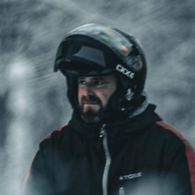
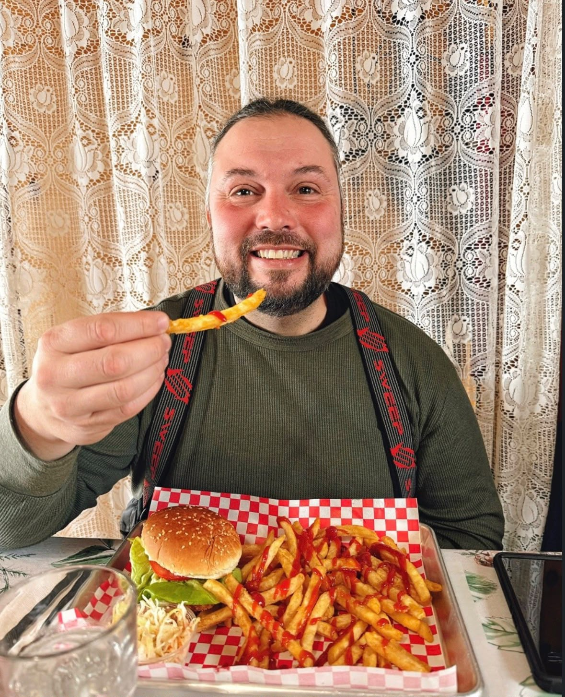

Il a su lire une trace avant de savoir faire du vélo
Né dans les Hautes-Laurentides, Bruno a passé ses premiers hivers debout sur les skis de la machine de son père. Comme Obélix dans la marmite : tombé dedans tout petit, jamais ressorti.
Notre équipe
Une petite équipe des Hautes-Laurentides. Tous passionnés, tous reformés avant chaque saison, tous obsédés par la même chose : que vous vous sentiez en sécurité du premier au dernier kilomètre.
Le fondateur
Né dans les Hautes-Laurentides, Bruno a passé ses premiers hivers debout sur les skis de la machine de son père. Comme Obélix dans la marmite : tombé dedans tout petit, jamais ressorti.
Bruno a eu un accident grave. Il vous racontera peut-être un soir, autour d'un feu.
Ce qu'il faut retenir, c'est ce qu'il en a fait. Depuis ce jour-là, la sécurité n'est plus une case à cocher chez nous : c'est une obsession. Le briefing qu'on ne saute jamais, les machines vérifiées une par une, le guide en queue de peloton, le demi-tour quand la météo dit non — même si le groupe insiste.
Alors quand un client trouve qu'on en fait trop, Bruno ne discute pas. Il sait exactement pourquoi.
« J'ai payé pour comprendre. Aucun de mes clients n'aura à le faire. »
Bruno dirige Canada Motoneige. Dans la région, tout le monde le connaît : les clubs, les pourvoiries, les hôteliers, les autres guides. Un nom qui ouvre des portes — et qui engage.
Il n'a jamais quitté le terrain pour autant : c'est encore souvent lui qui ouvre la trace devant les groupes.

Sur le terrain
Ils ne sont pas nombreux, et c'est voulu. Chacun a sa spécialité, son métier d'été, sa manière de faire — mais la même façon de voir les choses : personne ne monte sur une machine tant que tout le monde n'est pas prêt.

L'été, Erik entretient des terrains de golf : de la machinerie, du terrain à lire, des journées entières dehors. L'hiver, il range les tondeuses et il est avec nous.
Chasseur et coureur des bois depuis toujours, il connaît la forêt des Hautes-Laurentides bien avant qu'il y ait de la neige dessus. Il repère une trace d'orignal à trente mètres, sait où la glace tient et où elle ne tient pas, et devine la météo une bonne heure avant votre application.
Dans l'équipeGuide sur les longues distances et entretien du parc de machines. C'est souvent lui qui ouvre la trace le matin.

Axel est guide, mais il a surtout une formation en arboriculture. Autrement dit : il sait lire un arbre. Lequel va tenir, lequel va lâcher au prochain coup de verglas, lequel il vaut mieux contourner de dix mètres.
Après une tempête, quand un sentier est barré par une épinette de quinze mètres, c'est lui qui part devant avec la scie. Le groupe attend dix minutes, il revient, on repart. Sans lui, ce serait un demi-tour et une journée en moins.
Dans l'équipeOuverture et sécurisation des sentiers, guidage des groupes, gestion des imprévus en forêt.

Aélyne est guide — et aussi la première personne que vous rencontrez à l'arrivée : les clés, les combinaisons, les casques à la bonne taille, le café chaud avant le briefing. Tout ce qui fait qu'un départ commence bien.
Et sur les sentiers, Aélyne roule en queue de peloton. C'est la place la plus ingrate et la plus importante du groupe : celle d'où on voit tout le monde. On y repère qui fatigue, qui prend un virage un peu large, qui n'osera pas dire qu'il a froid. Chez nous, personne ne se retrouve seul à l'arrière.
Dans l'équipeGuidage des sorties, accueil, équipement, accompagnement des débutants et fermeture de groupe.

Adrien est pilote de drag en motoneige et en jet-ski. Tout ce qui a un moteur et qui va vite, il l'a couru en compétition. Le genre à savoir exactement à quel moment une machine décroche — et surtout ce qui arrive quand on pousse un cran trop loin.
Il en a gardé deux choses : un pilotage d'une propreté rare, et zéro tolérance pour l'improvisation. Et surtout, il connaît les machines mieux que quiconque ici. Chaque modèle, chaque réglage, chaque bruit suspect : il entend un problème bien avant de le voir. C'est aussi lui qui règle les motoneiges selon le niveau de chaque pilote du groupe.
Dans l'équipePréparation, réglage et vérification des machines, gestion de la base de loisirs, départs et retours de groupe. Rien ne quitte la base sans son feu vert.

Daniel forme les gardes forestiers à la conduite du quad et du buggy, été comme hiver. Quand ce sont les professionnels du bois qui viennent apprendre à piloter chez vous, c'est plutôt bon signe.
Instructeur avant d'être guide, il a cette qualité rare : il sait expliquer. En trois minutes, il repère ce qui bloque chez un débutant — la position des mains, la façon de se tenir dans les virages, le regard qui ne va pas assez loin — et il vous fait progresser sans jamais vous mettre mal à l'aise.
Hors saison, Daniel s'est donné une deuxième mission : goûter les frites de tous les casse-croûte de la région et classer les Subway du Québec. Le palmarès officiel n'est pas encore publié, mais si vous cherchez où manger après une journée de sentier, ne posez la question à personne d'autre.
Dans l'équipeFormation et encadrement en quad et en buggy, initiation des débutants, sorties mixtes. Et recommandations gastronomiques non sollicitées.

Il ne montera pas sur une motoneige avec vous — et pourtant rien ne part sans son accord. Diplômé en comptabilité et gestion, il tient les devis, les factures, les assurances et les permis d'une main qui ne tremble pas.
Concrètement, pour vous, ça donne une chose très simple : le prix annoncé dans le devis est le prix que vous payez. Pas de ligne surprise à la fin du séjour, pas de « frais divers » sortis de nulle part.
Dans l'équipeDevis, facturation, assurances, permis et suivi administratif. La colonne vertébrale discrète de l'entreprise.
Sur les sentiers
Ce ne sont pas nous qui les présentons : ce sont nos voyageurs. Chaque ligne ci-dessous est tirée d'un avis Google, mot pour mot.

Le prénom qui revient le plus souvent dans nos avis Google : cinq fois, sur des séjours différents.
Un grand merci à notre guide Guillaume, pour son rire, les petites attentions et le partage de sa passion de la forêt.
Bénédicte E. · avis Google

Il roule souvent en binôme avec Guillaume sur les groupes nombreux.
Nous étions un groupe de dix motards… Nos deux guides Bastien et Guillaume étaient très pro et à notre écoute.
Hannie T. · avis Google

Cité aussi bien par des groupes d'amis que par des voyageurs seuls.
Joé le guide au top aussi. Vraiment j'en garde un super expérience, un souvenir à vie.
Guy L. · avis Google

Il forme un duo régulier avec Joé sur les séjours sur mesure.
Un immense merci à Joé et Jonathan pour ce séjour de motoneige vraiment unique ! Tout était pensé dans les moindres détails.
Thomas R. · avis Google

Souvent en tête sur les itinéraires qui passent par les pourvoiries.
Superbe aventure en motoneige avec notre guide Hugo. Tout a été parfait : prise en charge, découverte de la région, des pourvoiries, écoute et bienveillance.
Karine T. · avis Google
Chaque automne, avant le premier client
Personne ne prend la route avec un groupe sans être repassé par là. Guides, base, accueil : toute l'équipe y passe, chaque année, même après dix saisons.
Réanimation, hypothermie, engelures. Reconnaître les signes chez quelqu'un qui ne dira rien — et savoir quoi faire quand l'ambulance est à quarante minutes.
Épaisseur, courants, slush, traversées de lacs. Quand on passe, quand on contourne, et quand on ne passe pas du tout.
Courroie, bougies, chenille, démarrage à froid. Réparer sur le sentier, à −25, avec des gants.
Radios, balise satellite, itinéraire déposé à la base avant chaque départ, protocole d'appel. Chaque groupe est suivi, tout le temps.
Règles des véhicules hors route, signalisation des sentiers, distances de sécurité, croisements. Rouler à dix comme on roulerait à un.
Chaque itinéraire est reparcouru par l'équipe avant l'ouverture. Rien n'est laissé à la mémoire de l'an dernier : une tempête suffit à tout changer.
Tous formés. Et tous passionnés. Erik, Axel, Aélyne, Adrien et Daniel ne font pas ce métier pour l'hiver facile. Ils le font parce qu'ils aiment ça — et parce qu'il n'y a pas grand-chose de plus satisfaisant que de voir quelqu'un qui n'avait jamais touché une motoneige rentrer le soir avec le sourire, en sécurité, en demandant déjà quand est-ce qu'on repart.